$$qf_commondoc_header.start$$ $$qf_commondoc_header.end$$
$$see:See also the FCS Diffusion Law Documentation.$$
Introduction
$$startbox_note$$
The data for this tutorial is available as raw data from http://www.dkfz.de/Macromol/quickfit/examples.html as spimfcs_difflaw.zip. This data was acquired in HeLa cells expressing EGFP-4x and for TetraSpec beads (100nm) in solution on a SPIM-FCS system with an EMCCD-camera with pixel size $(a = 400nm)$ and focus parameters: $(
w_{xy} = (310 \pm 21)nm)$ and $(w_z = (1126 \pm 100)nm)$.
$$endbox$$
This tutorial explains two options at the same time:
- FCS Diffusion Law plots (DiffLaw) from imFCS data with increasing binning, i.e. Aeff vs. τD as proposed by $$ref:BAG2012:Bag, N., J. Sankaran, A. Paul, R.S. Kraut, and T. Wohland. 2012. Calibration and limits of camera-based fluorescence correlation spectroscopy: a supported lipid bilayer study. ChemPhysChem. 13: 2784-2794.$$ $$ref:Wawrezinieck2015:Wawrezinieck, L., H. Rigneault, D. Marguet, and P.-F. Lenne. 2005. Fluorescence Correlation Spectroscopy Diffusion Laws to Probe the Submicron Cell Membrane Organization. Biophys J. 89: 4029-4042.$$
- Mean-squared displacement (MSD) like plots from 2-pixel imFCCS data with increasing pixel-distance, i.e. τD vs. dx/y2 as proposed in $$ref:BAUM2014:Baum, M., Erdel, F., Wachsmuth, M., Rippe, K. (2014). Retrieving the intracellular topology from multi-scale protein mobility mapping in living cells. Nature Communications, 5. doi: 10.1038/ncomms5494$$
Both options are explained side-by.side in the remainder of this tutorial and you will have to choose, which direction to follow.
Tutorial
Correlate Data
- Download (see above) the data and unzip them into an empty directory, or acquire your own data.
- Start QuickFit and correlate the data, by clicking on the menu entry Data Items | Insert Raw Data | imFCS: Imaging FCS | correlate Images and Insert. Then select the file to correlate and set the properties as follows:
- for binning: choose interleaved binning, select ACF-only and click on add job series, choose binning = 1..10 (step 1) and wait until the data is correlated
- for distance CCF: choose binning 1x, de-activate the ACF and activate CCF to distant pixel. Set the distances to 1,0;2,0;3,0;4,0;5,0;6,0;7,0;8,0;9,0;10,0, which correlates to the 10 next neighbors to the right.
In both cases, also choose an appropriate bleach-correction (e.g. exp(poly4) for cell-data or none for beads). Typically 3-5 segments are a good choice. Also make sure, that the correct pixel size (in the focus plane) is entered at the top of the window (activate the checkbox "camera size" and provude the appropriate pixel size, if you camera pixels are e.g. $(24\mathrm{{\mu}m})$ and the magnificazion was 60x, enter $(a=400\mathrm{nm}=2400\mathrm{nm}/60)$).
- When all correlations are finished, close the dialog. The data will be added to the project, sorted into one folder per file.
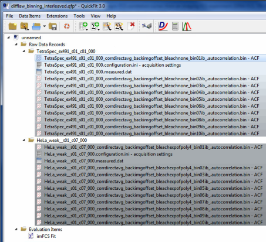
- If you use cell data, you may want to define a mask for the data. To do so:
- double-click the first imFCS record in the project and choose the tab "Parameter Image"
- create a mask by selecting pixels in the overview image and clicking on "mask sel.", or by using the mask-by-intensity tool in the menu Mask | mask by overview.
- Move on to the next record by clicking the button Next and repeat the masking, until you defined a mask for every record. Alternatively you can also use the menu entry Mask | copy Mask to other RDRs of the same type to reuse the (rescaled) mask for several other RDRs.
Here is an overlay plot of the normalized and unnormalized ACFs from the beads-measurement in the example data with increasing binning:
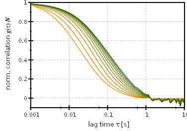
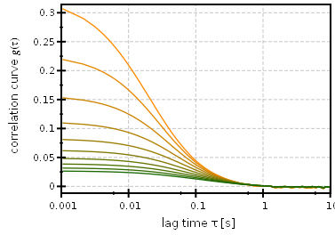
Here is an overlay plot of the DCCFs from the beads sample data:
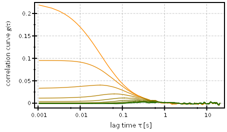
Fit Data
- Add an imFCS Fit to the project by clicking Data Items | Insert Evaluation | imFCS Curve Fitting. Open the fit by double-clicking the entry in the project tree.
- Choose an appropriate fitting model:
Also set the focus parameters of the model, as appropriate (e.g. the value given for a, $(w_{xy})$ and $(w_z)$ above, if you use the provided test data, or data obtained from an imFCS calibration). In all cases you should use a single diffusive component.
- Fit the average run of the first record, until you get a sufficiently good fit (by clicking on Fit Current). then use this fit result as initial value for all further fits by clicking Copy to Initial
- Now you can fit all other files, by choosing the next RDR/file in the list on the rhs and then clicking Fit all Pixels. Note how the pixel size $(a)$ changes with increasing binning, when you change from one file to the next. If it does not, correct it manually to an approprite value for the file. You can also fit all pixels in all files, if you are confident, the binning setting works correctly.
- Browse randomly through the files and check some fits by clicking random non-masked pixels in the overview image at the bottom. If you are happy with the fits, close the Fit window. Otherwise you may want to rerun the fits, or change some initial parameters (click Reset All to remove all fit results!).
Plotting FCS Diffusion Laws
FCS Diffusion Laws (Aeff vs. τD)
- Open the imFCS RDR editor by double-clicking the first record (e.g. bin00, DCCF(0,1), ...) in the project tree. Then choose the tab "Parameter Image". The fit results should be selected as result set and you can observe the fit result maps in the window:
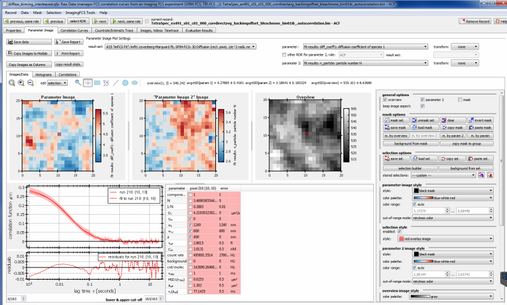
- Click on the menu entry ImagingFCS Tools | calculate FCS diffusion law-typed plots
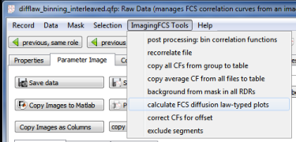
- A new window will open, which shows the FCS diffusion law plot:
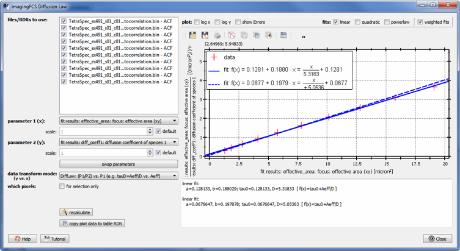
This window will stay open, alongside the imagingFCS RDR editor and you can re-open it by clicking the menu entry from the last step.
It contains two columns: On the rhs you see the plot with some basic fits and on the lhs you can set the options for the plot:
- At the top you can select the files/RDRs to use for the plot. The plugin already pre-filtered the project files to matching files (from the same raw-data). You can select/deselct a file by checking/unchecking it in the list. then click in Recalculate
- Below this list, you can select the parameters to plot. Ideally this would be the effictve focus area $(A_{eff})$ as parameter 1 and the diffusion time $(\tau_D)$ as parameter 2 for FCS diffusion laws, or the pixel-distance $(d_{x/y})$ for parameter 1 and the diffusion time $(\tau_D)$ for parameter 2 in the case of MSD-typed plots (from DCCF fits). If the diffusion time, or the effective area two are not available, the plugin can also calculate them from other fit parameters, e.g.:
$[\tau_D=\frac{A_{eff}}{D},\ \ \ \ \ A_{eff}=w_{xy}^2]$
For this to happen, select the two parameters, that you want and then choose an appropriate mode. As an example, observe the settings in the following image, which plot $(\tau_D=A_{eff}/D)$ versus $(A_{eff})$:
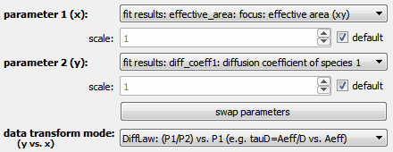
$$note:Make sure that these parameters are set for the example data!$$
- The plot assumes, that diffusion times are given in seconds and lengths in micrometers (or diffusion coefficients in micrometers2/second). If this is not the case for your parameters, you can choose multiplicative scaling factors. In many cases they can be determined automatically by the plugin (checkbox default activated).
- The plot on the right already contains a linear fit. You can activate more fit functions with the check-boxes above the plot. If you want to save the plot, you can click on
 , which will insert a table RDR into the project tree with the current plot (including the fits). There you can also do more elaborate fits to the data, or format the plot for publication. By ricght-clicking the plot you also have the usual plotter tools, that allow to save the data of the plot, save the plot or print it.
, which will insert a table RDR into the project tree with the current plot (including the fits). There you can also do more elaborate fits to the data, or format the plot for publication. By ricght-clicking the plot you also have the usual plotter tools, that allow to save the data of the plot, save the plot or print it.
- If you only want to vie the diffusion law of a subset of the pixels in the record, you can do so by selecting a region in the overview image in the imFCS RDR (use e.g.
 or
or  ):
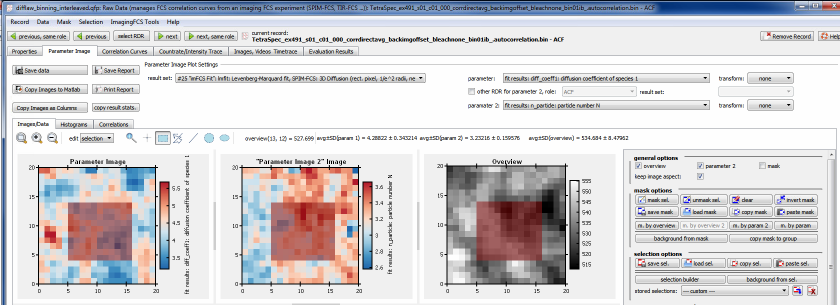
Then you go back to the diffusion law window and check the option which pixels: for selection only.
):
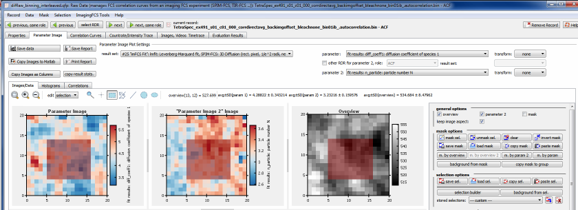
Then you go back to the diffusion law window and check the option which pixels: for selection only.
- Finally, if you select a different record in the project, the diffusion law plot will also change to that new record. E.g. for the cell-data from the example dataset:
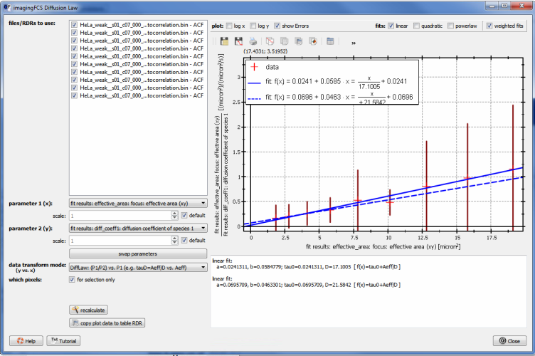
$$note:For DCCF larger distance often do no longer correlate, so it may help to use only the firt few shifts.$$
Mean squared displacements (τD vs. dx/y2)
- If you correlated your data for MSD-like plots, i.e. generated 2-pixel cross-correlations (DCCF) with increasing pixel-distance, you can use the same tool as above to plot the MSD-like curves. To do so, follow the same general steps as above, but choose different parameters:
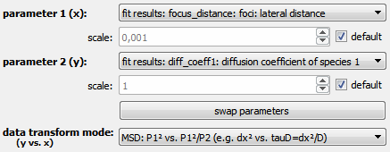
This calculates the diffusion time and MAS as:
$[ \tau_D=\frac{d_{x/y}^2}{D},\ \ \ \ \ \mbox{MSD}=d_{x/y}^2 ]$
The plot then looks as:
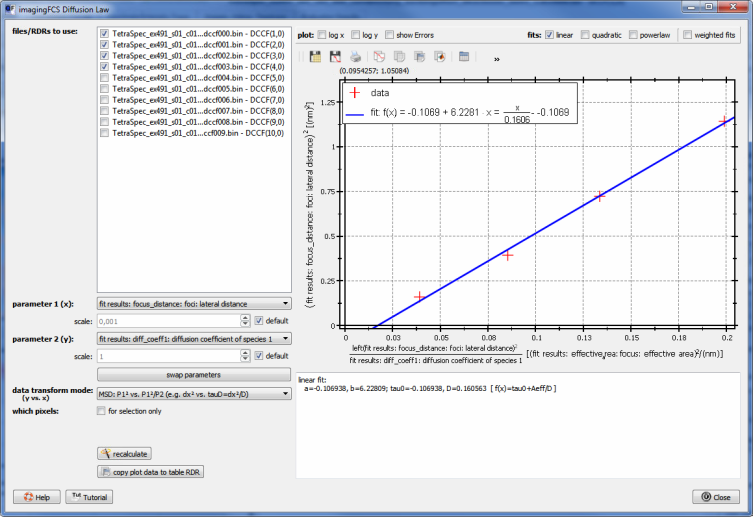
References
$$references$$